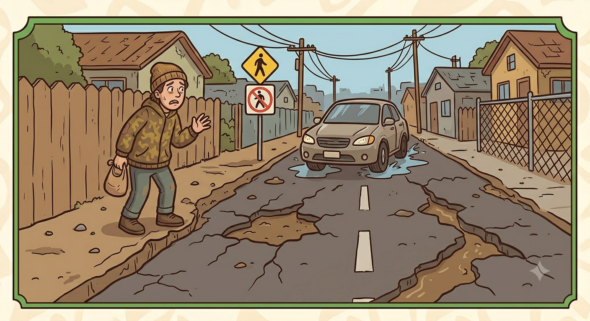
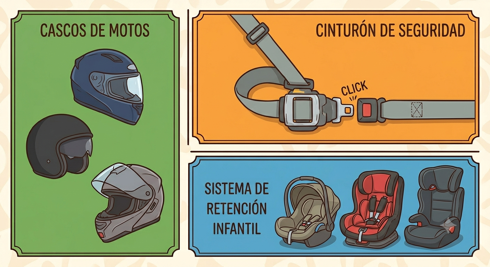
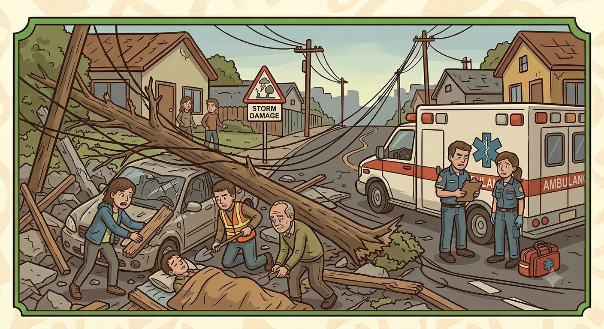
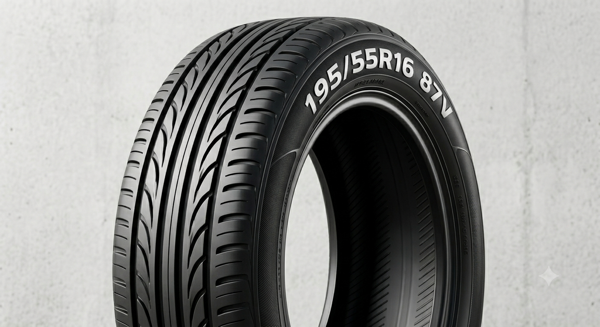

Selecciona un bloque arriba para empezar a estudiar.
Concepto
Selecciona un bloque para comenzar:
Selecciona un bloque arriba para empezar a estudiar.
Concepto
Selecciona una categoría para estudiar los conceptos clave:
Definición: Corresponde a motos, bicimotos, cuadraciclos o triciclos.

Definición:Autoriza a conducir vehiculos de hasta 4000kg de peso bruto y su cilindraje no es mas de 550 centimetros cubicos.

Definición:Se debe ser mayor de 20 años y autoriza a conducir vehiculos de hasta 8000kg de peso bruto y anteriormente haber tenido una licencia B o C con al menos 2 años de haberla expedido.
Definición:Se debe ser mayor a 22 años, autoriza a conducir vehiculos pesados EXCEPTO los articulados, debe contar con una licencia B o C con al menos 3 años de haber sido expedida.
Definición:Su unica diferencia a comparacion de la B3 es que esta si permite conducir vehiculos articulados, y para obetenrla hay que aprobar un curso espacial de COSEVI
Definición: Corresponde a sistemas de transporte, es decir, buses, microbuses, taxis, busetas.

Definición: Corresponde a tractor de llantas u oruga y otros tipos de equipos especiales.

Definición: Corresponde a vehículos con dos, tres o más ejes excepto los destinados a transporte público.
Definición: Se refiere a una mala condicion de vias y del vehiculo, consumo de alcohol y drogas, exceso de velocidad o distracciones. Todo lo que puede provocar un accidente.

Definición: Se refiere a una calle sin tipo de vias, falta de aceras, tipo de vehiculo, volumen de transito o distancia de translado.

Definición: No utilizar sistemas de seguridad, como cascos, cinturon o sistema de retencion infantil.

Definición: Se refiere a retraso en la deteccion y atencion del accidente, falta de servicios de emergencia y el translado al hospital

Definición:
195= Representa el ancho en mm del neumatico.
55= Porcentaje del flanco al ancho nominal.
R= Tipo de construccion ya sea radial o convencional.
16= Diametro interior del neumatico en pulgadas.
87 = Indice de carga.
V = Velocidad maxima.

Definición: Las capas de cable estas acomodadas de forma paralela, son resistentes a deformidades y altas temperaturas por velocidad.
Definición: Estructura diagonal para mayor amortiguacion en terrenos irregulares, son ideales para vehiculos de carga ya que soportan altas presiones pero tienen menor durabilidad en comparacion a las radiales.
Definición: Tambien conocidad como llantas doble proposito, tienen buen desempeño para terreno pavimentado y sin pavimentar.
Definición: Tiene una estructura robusta para terrenos dificiles, buen desempeño en terreno con barro y tierra y menor desempeño en carreteras.
Definición: Es comun verlas en vehiculos que corren largas distancias en carreteras y estan diseñadas para terrenos pavimentados.
Definición: Estan diseñadas para zonas con nieve.